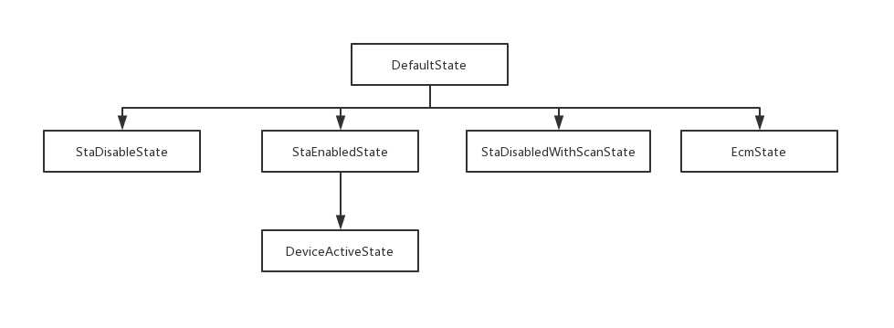

流程图

代码具体流程
app应用层
WifiSettings.java
packages/apps/settings/WifiSettings.java
在onStart()创建一个WifiEnabler对象，实现wifi开关功能。
1 |
|
WifiEnabler.java
packages/apps/settings/WifiEnabler.java
开启Wifi开关变会有下面的操作。
1 |
|
点击开关会调用mWifiManager.setWifiEnabled。
Java框架层
WifiManager.java
frameworks/base/wifi/java/android/net/wifi/WifiManager.java
2
3
4
5
6
7
try {
return mService.setWifiEnabled(mContext.getOpPackageName(), enabled);
} catch (RemoteException e) {
throw e.rethrowFromSystemServer();
}
}
IWifiManager.aidl
frameworks/base/wifi/java/android/net/wifi/IWifiManager.aidl
1 | boolean setWifiEnabled(String packageName, boolean enable); |
WifiSeviceImpl.java
frameworks/opt/net/wifi/service/java/com/android/server/wifi/WifiSeviceImpl.java
1 |
|
WifiManager.setWifiEnabled通过aidl跨进程调用到了WifiServiceImpl.setWifiEnabled,其中WifiServiceImpl是WifiService的实现类。在WifiServiceImpl的setWifiEnabled方法里做的一些事情：
enforceChangePermission 判断调用的进程是否有权限。想要开关wifi需要CHANGE_WIFI_STATE 权限。
isAirplaneModeOn 判断飞行模式。
handleWifiToggled 保存wifi 操作的状态。
向WifiController发送CMD_WIFI_TOGGLED消息。
WifiController.java
frameworks/opt/net/wifi/service/java/com/android/server/wifi/WifiController.java
首先讲一下WifiController，它是一个状态机，可能Android每个版本的状态机不完全一样，比如Android P 和Android O比起来状态机减少了一些分支。 WifiController在WIfiServiceImpl的构造函数中初始化、并开始运行。
WifiController 和WifiStateMachine 不同，WifiStateMachine是一个复杂的状态机，它维护了Wifi的启动、扫描、连接、断开等多个状态。WifiController 是高级别的wifi状态机，因为它管理的状态是wifi开关，wifi热点开关等状态，只有在wifi开关等具体状态下，判断wifi处于启动扫描附近热点状态等才是有意义的。
1 | WifiController(Context context, WifiStateMachine wsm, Looper |
wifiController状态机各状态：

状态机初始状态为StaDisabledState，在该状态下对CMD_WIFI_TOGGLED消息的处理
StaDisabledState
1 | class StaDisabledState extends State { |
在StaDisabledState状态下没做什么处理，接着转换到DeviceActiveState状态，StaEnabledState是它的父状态，由StateMachine的知识可知，转换到该状态时，会依次调用父、子状态的enter()函数。先看DeviceActiveState的父状态StaEnabledState
StaEnabledState
1 | class StaEnabledState extends State { |
DeviceActiveState
1 | /** |
可以看到在DeviceActiveState状态下主要做了两个操作mWifiStateMachinePrime.enterClientMode()和
mWifiStateMachine.setHighPerfModeEnabled(false)，主要看mWifiStateMachinePrime.enterClientMode()。
WifiStateMachinePrime.java
frameworks/opt/net/wifi/service/java/com/android/server/wifi/WifiStateMachinePrime.java
1 | /** |
ModeStateMachine又是一个状态机，不过这个状态机比较简单只有三个状态，初始状态为WifiDisabledState。
ModeStateMachine
1 | private class ModeStateMachine extends StateMachine { |
WifiDisabledState
1 | class WifiDisabledState extends ModeActiveState { |
状态机从WifiDisabledState状态转向ClientModeActiveState状态，所以再继续看ClientModeActiveState
ClientModeActiveState
1 | class ClientModeActiveState extends ModeActiveState { |
这里的mManager是ActiveModeManager，是个接口，这里的ClientModeManager实现了这个接口。我们继续走下去，去看ClientModeManager，主要看mManager.start()这个调用。
ClientModeManager.java
frameworks/opt/net/wifi/service/java/com/android/server/wifi/ClientModeManager.java
1 | /** |
ClientModeStateMachine也是个状态机，该状态机只有两个状态，初始状态为IdleState。
ClientModeStateMachine
1 | private class ClientModeStateMachine extends StateMachine { |
看一下初始状态Idlesate状态的处理
Idlesate
1 | private class IdleState extends State { |
主要看 mWifiNative.setupInterfaceForClientMode的操作。
WifiNative.java
frameworks/opt/net/wifi/service/java/com/android/server/wifi/WifiNative.java
1 | /** |
到这里就可以看到一些关键性的操作：
启动Hal：startHal()
启动supplicant：startSupplicant()
加载驱动（loadDriver）：setupInterfaceForClientMode()
启动WifiMonitor：WifiMonitor.startMonitoring()WifiMonitor.startMonitoring()：这一步主要是在WifiMonitor中建立与wpa_supplicant通信的socket通道、创建一个线程接收底层事件并分发处理。这里会创建两个socket通道与wpa_s通信，一个用于下发指令，另一个用于接收事件。成功后WifiMonitor会向WifiStateMachine发送一个代表socket通信建立成功的消息：SUP_CONNECTION_EVENT；收到这个消息就表示Wifi已经启动成功了。
startHal
1 | /** Helper method invoked to start supplicant if there were no ifaces */ |
WifiVendorHal.java
frameworks/opt/net/wifi/service/java/com/android/server/wifi/WifiVendorHal.java
1 | /** |
mHalDeviceaManager.start()
frameworks/opt/net/wifi/service/java/com/android/server/wifi/HalDeviceManager.java
1 | /** |
主要看WifiStatus status = mWifi.start()，先看下mWifi是什么。
1 | /** |
这里返回的是IWifi的服务端。至此我们开始进入HIDL。
HIDL
IWifi.hal
hardware/interfaces/wifi/1.0/IWifi.hal
1 | /** |
系统编译的时候会自动产生IWifi.java文件
out/soong/.intermediates/hardware/interfaces/wifi/1.0/android.hardware.wifi_V1.0-java_gen_java/gen/android/hardware/wifi/V1_0/IWifi.java
IWifi.java的getService方法
1 | public static IWifi getService(String serviceName) throws android.os.RemoteException { |
再看一下 IWifi.java的asInterface方法
1 | IWifi.asInterface(android.os.HwBinder.getService("android.hardware.wifi@1.0::IWifi",serviceName)); |
从而我们就可以知道IWifi对应的服务端了
wifi.cpp
hardware/interfaces/wifi/1.2/default/wifi.cpp
按照IWifi.java的代码接下来的调用路径应该在hardware/interfaces/wifi/1.0/default/，但没有发现这个路径下有wifi.cpp这个文件，hardware/interfaces/wifi/1.2/default/倒是有wifi.cpp，这个我也不清楚为什么。那就先按这个调用流程走下去吧。
wifi.start
1 | Return<void> Wifi::start(start_cb hidl_status_cb) { |
startInternal()
1 | WifiStatus Wifi::startInternal() { |
接着看wifi_mode_controller.cpp得initialize()方法。
wifi_mode_controller.cpp
hardware/interfaces/wifi/1.2/default/wifi_mode_controller.cpp
1 | bool WifiModeController::initialize() { |
WPA适配层(硬件抽象层 HAL)
HAL 可定义一个标准接口以供硬件供应商实现，这可让 Android 忽略较低级别的驱动程序实现。借助 HAL，可以顺利实现相关功能，而不会影响或更改更高级别的系统。HAL 实现会被封装成模块，并由 Android 系统适时地加载。
driver_tool.cpp
frameworks/opt/net/wifi/libwifi_hal/driver_tool.cpp
1 | bool DriverTool::LoadDriver() { |
wifi_hal_common.cpp
1 | int wifi_load_driver() { |
wpa_supplicant
wpa_supplicant是一个开源项目，已经被移植到Linux，Windows以及很多嵌入式系统上。它是WPA的应用层认证客户端，负责完成认证相关的登录、加密等工作。wpa_supplicant的源代码目录为：/external/wpa_supplicant_8/
wpa_supplicant是一个独立运行的守护进程，其核心是一个消息循环，在消息循环中处理WPA状态机、控制命令、驱动事件、配置信息等。wpa_supplicant有很多控制接口，也提供命令行和通行界面的控制模式：而Android与wpa_supplicant的通信通过Socket完成
后续我会专门写一系列关于wpa_supplicant相关的流程相关的文章，到时候会给出索引
Linux Kernel
kernel/driver/net/wireless/
vendor/gcom/opensource/wlan/